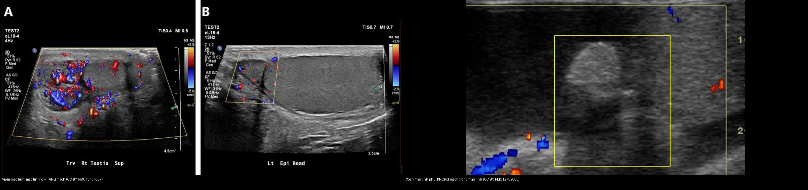
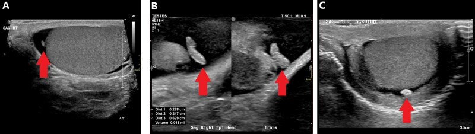
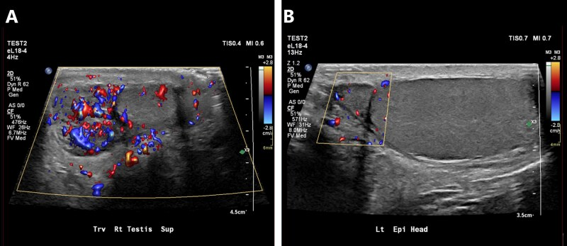
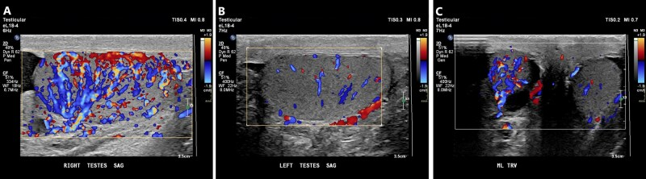
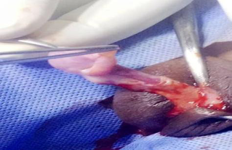
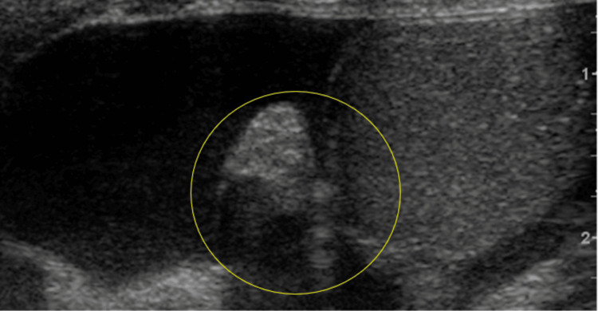
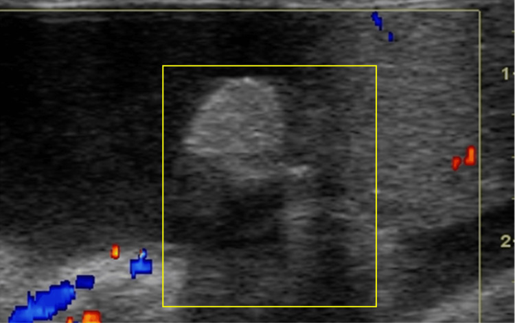
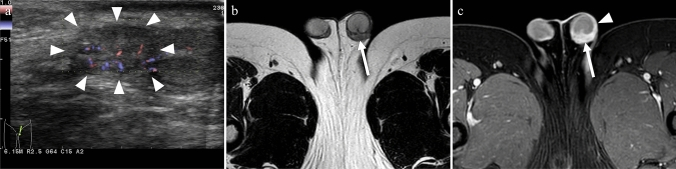

631 — Đau bìu cấp ở trẻ KHÔNG do xoắn tinh hoàn / Acute scrotum beyond testicular torsion
Tags: pattern:dau-biu-cap pattern:xoan-mao-tinh-phu pattern:vien-mao-tinh-tinh-hoan pattern:vien-tinh-hoan-quai-bi vung:biu-tinh-hoan-nhi score:TWIST protocol:sieu-am-Doppler-biu protocol:xet-nghiem-nuoc-tieu
Mức chắc chắn (certainty): tổng hợp y văn (literature synthesis) — số liệu từ các nguồn truy cập mở (PMC13134857, PMC12752805, PMC12220859, PMC12337970, PMC12130081, PMC10980613, PMC12074864) + 3 ca nguyên văn minh họa.
Bổ trợ trực tiếp cho 636 – Cấp cứu niệu–sinh dục nhi (xoắn tinh hoàn) và 638 – Khối bìu–tinh hoàn không đau (khối không đau). Bài này phủ nhánh đau bìu cấp nhưng KHÔNG phải xoắn tinh hoàn.
1. Tổng quan bệnh học – cơ chế hình ảnh
- Đau bìu cấp (acute scrotum): khởi phát đau + đỏ phù bìu đột ngột, là cấp cứu nhi–niệu khoa. Ba nguyên nhân hàng đầu: xoắn tinh hoàn (testicular torsion – TT), xoắn mào tinh phụ (torsion of the appendix testis/epididymis – TATE), viêm mào tinh–tinh hoàn (epididymo-orchitis) (PMC12220859).
- Cơ chế từng nhóm:
- Xoắn mào tinh phụ (appendix testis/epididymis): các tàn dư phôi (Müllerian – appendix testis; Wolffian – appendix epididymis) bị xoắn → hoại tử vô mạch (avascular) → đau nhói, khu trú cực trên tinh hoàn; là tàn dư không có chức năng, đa số tự khỏi.
- Viêm mào tinh (epididymitis): vi khuẩn (STI: Chlamydia, N. gonorrhoeae; hoặc vi khuẩn đường ruột E. coli/Proteus) hoặc virus ở trẻ nhỏ (enterovirus/adenovirus), đôi khi do trào ngược nước tiểu (dysfunctional voiding — "epididymitis hóa học") → mào tinh phù, tăng mạch (hyperemia) trên Doppler.
- Viêm tinh hoàn do quai bị (mumps orchitis): virus → tinh hoàn to, đau, tăng mạch lan tỏa; tới 20% ca quai bị có viêm tinh hoàn (PMC13134857).
- TẠI SAO hình ảnh phân biệt được (vật lý Doppler):
- Viêm = tăng tưới máu (hyperemia) → nhiều tín hiệu màu trên Doppler màu/năng lượng, phổ tâm thu-tâm trương tăng.
- Xoắn mào tinh phụ = mô chết vô mạch → KHÔNG có tín hiệu trong "chấm" hồi âm nằm giữa tinh hoàn và đầu mào tinh.
- Kích thước tương đối + tín hiệu Doppler là hai trục: mào tinh to + tăng mạch = viêm; chấm nhỏ không mạch = xoắn mào tinh phụ.
Ngưỡng định lượng bắt buộc (Argon – cửa 1)
| Đại lượng | Ngưỡng | Nguồn |
|---|---|---|
| Tuổi trung vị: xoắn tinh hoàn vs xoắn mào tinh phụ | 14,0 vs 10,5 tuổi (p = 0,026) | PMC12220859 |
| Mào tinh phụ là appendix testis | 91–95% ca xoắn mào tinh phụ | PMC12752805 |
| Dấu "chấm xanh" (blue dot sign) khi khám | Có nhưng chỉ ~1/5 ca — thiếu dấu không loại trừ | PMC12337970 |
| Siêu âm phát hiện xoắn tinh hoàn | Se 0,86 / Sp 0,96 — dòng chảy bình thường KHÔNG loại trừ (xoắn từng lúc/xoắn một phần) | PMC12752805 |
| Kích thước bình thường | Đầu mào tinh 10–12 mm đường kính | PMC13134857 |
| Điểm TWIST (7 điểm) | Phù tinh hoàn 2 · tinh hoàn chắc 2 · tinh hoàn nằm cao 1 · mất phản xạ cơ bìu 1 · nôn/buồn nôn 1 | PMC12337970 |
| Phân tầng TWIST | 0–2 thấp · 3–4 trung bình · ≥ 5 cao (≥ 5 → mổ ngay, < 3 → có thể chỉ theo dõi/không cần siêu âm) | PMC12337970 |
2. Mẫu hình + chẩn đoán phân biệt theo tuổi (Gamut)
- Sơ sinh – < 2 tuổi: xoắn ngoài bao tinh hoàn (extravaginal torsion) (cấp cứu), thoát vị bẹn nghẹt (incarcerated hernia), viêm mào tinh do virus (enterovirus), phù bìu vô căn (idiopathic scrotal edema — "bìu tím", sốt nhẹ, tự khỏi), hội chứng Henoch–Schönlein (IgA vasculitis).
- 2–11 tuổi (prepubertal): xoắn mào tinh phụ (TATE) là nguyên nhân hay gặp nhất; viêm mào tinh do virus/dị dạng niệu; chấn thương.
- ≥ 12 tuổi (postpubertal): phải loại trừ xoắn tinh hoàn trước tiên; viêm mào tinh do STI (nhiều nhất ở 18–35 tuổi); viêm tinh hoàn do quai bị; u tinh hoàn xuất huyết (giả "viêm"); Fournier ở người suy giảm miễn dịch.
- Không theo tuổi nhưng phải nhớ: u tinh hoàn hoại tử/xuất huyết (đau + khối), xoắn từng lúc (intermittent torsion), trào ngược bàng quang–niệu quản gây đau bìu, bệnh lý mào tinh lao, Fournier (đau nhiều, khí trong mô mềm).
- Quy tắc cửa vào: mọi đau bìu cấp phải loại trừ xoắn tinh hoàn trước (nối 636); chỉ khi loại trừ xong mới chẩn đoán các nguyên nhân "không xoắn" dưới đây.
3. Bảng so sánh phân biệt (ma trận đối chiếu)
| Thực thể (entity) | Hình ảnh điển hình (siêu âm Doppler / MRI) | Chốt vào (rule-in) | Chốt loại (rule-out) | Gợi ý xác nhận |
|---|---|---|---|---|
| Xoắn mào tinh phụ (TATE) | "Chấm" hồi âm (isoechoic) giữa cực trên tinh hoàn và đầu mào tinh, có thể to ≥ 5–6 mm; vô mạch trên Doppler; ± tràn dịch phản ứng | Chấm vô mạch ở cực trên + đau khu trú tại chỗ + khởi phát từ từ ("insidious"); dấu "chấm xanh" khi khám | Tinh hoàn có mạch bình thường + mào tinh không to → không phải viêm mào tinh; xoắn toàn bộ tinh hoàn → 636 | Điều trị nội khoa (NSAID), không cần mổ nếu loại trừ được xoắn |
| Viêm mào tinh (epididymitis) | Mào tinh to, không đồng nhất, TĂNG mạch rõ; ± tràn dịch/tràn mủ phản ứng; tinh hoàn cùng bên có thể tăng mạch nhẹ | Mào tinh to + tăng mạch (hyperemia); đau khi ấn dọc ống bẹn; vi khuẩn trong nước tiểu (STI/UTI) | Mào tinh bình thường + vô mạch → nghĩ xoắn mào tinh phụ; tinh hoàn mất mạch → 636 | XN nước tiểu/cấy + NAAT STI; kháng sinh + NSAID |
| Viêm tinh hoàn do quai bị (mumps orchitis) | Tinh hoàn to, hồi âm không đồng nhất, tăng mạch lan tỏa; ± tràn dịch | Tiền sử quai bị/sốt + tinh hoàn to tăng mạch; tới 20% ca quai bị có viêm tinh hoàn | Tinh hoàn mất mạch → 636; mào tinh là ổ chính → viêm mào tinh | Triệu chứng/miễn dịch; điều trị nội khoa |
| Phù bìu vô căn (idiopathic scrotal edema) | Dày mô mềm bìu – vách bìu lan xuống thừng tinh; tinh hoàn & mào tinh bình thường, dòng chảy bình thường | Da bìu tím, phù nề nhiều, đau nhẹ, tinh hoàn hoàn toàn bình thường | Tinh hoàn/mào tinh bất thường → loại trừ; mất mạch → 636 | Theo dõi, tự khỏi; kháng sinh không cần |
| Xoắn ngoài bao sơ sinh (extravaginal torsion) | Sơ sinh: tinh hoàn to, hồi âm không đồng nhất, mất mạch, da bìu đổi màu | Sơ sinh bìu to cứng + mất mạch toàn bộ | Có mạch → không phải (nhưng không loại trừ xoắn từng lúc) | Mổ cấp cứu (cửa sổ vàng ngắn) |
| U tinh hoàn xuất huyết/hoại tử (giả viêm) | Khối đặc trong tinh hoàn tăng mạch không đồng nhất ± hoại tử; không giảm khi điều trị viêm | Khối đặc + AFP/hCG/LDH ± tăng, không đáp ứng kháng sinh | Tổn thương nhỏ vô mạch ở mào tinh → TATE | Siêu âm lại sau điều trị; marker + mổ (nối 638) |
| Fournier (viêm cân hoại tử bìu) | Khí trong mô mềm (hồi âm dày + "dirty shadow"), dày thành bìu, tổn thương lan | Khí trong mô mềm bìu + nhiễm trùng toàn thân | Không khí + mô mềm bình thường → loại trừ | Kháng sinh phổ rộng + cắt lọc cấp cứu |

Trái: viêm mào tinh — mào tinh to, hồi âm không đồng nhất + tăng mạch rõ trên Doppler. Phải: xoắn mào tinh phụ — "chấm" to ở cạnh tinh hoàn KHÔNG có tín hiệu mạch. Nguồn: Lam Shin Cheung J & Bhaduri M., Br J Radiol 2026 (PMC13134857, CC BY 4.0) + Louviere CD et al., Cureus 2025 (PMC12752805, CC BY 4.0); ảnh ghép letterbox.4. Protocol chụp + thang điểm TWIST + flowchart
- Siêu âm bìu – Doppler màu (đầu tay, khẩn): đầu dò thẳng ≥ 10 MHz, bìu nâng bằng khăn; quét ngang qua cả hai tinh hoàn trong cùng một khung màu để so sánh đối xứng (tránh dương tính/âm tính giả do cài đặt PRF); chụp đầu – thân – đuôi mào tinh + tìm "chấm" mào tinh phụ ở cực trên; thêm Doppler xung (phổ) hai bên; siêu âm lại sau khi tràn dịch giảm.
- Khi nào chụp CT/MRI: không để chẩn đoán đau bìu cấp thường quy; MRI hữu ích khi viêm phức tạp/u, trẻ nhỏ cần đánh giá mô mềm (nối PMC10980613).
- Xét nghiệm: tổng phân tích nước tiểu + cấy; NAAT Chlamydia/gonorrhoeae ở trẻ vị thành niên có hoạt động tình dục; marker u (AFP/β-hCG/LDH) nếu có khối.
- TWIST (Testicular Workup for Ischemia and Suspected Torsion) — 7 điểm: phù tinh hoàn 2, tinh hoàn chắc 2, tinh hoàn nằm cao 1, mất phản xạ cơ bìu 1, nôn/buồn nôn 1. Phân tầng: 0–2 thấp, 3–4 trung bình (siêu âm), ≥ 5 cao → mở thám sát ngay (không chờ hình ảnh).
- Xử trí theo nguyên nhân: TATE → NSAID, nghỉ ngơi, theo dõi; viêm mào tinh → kháng sinh theo nguyên nhân (± NAAT STI) + NSAID; viêm tinh hoàn quai bị → nội khoa; phù bìu vô căn → theo dõi; xoắn → mổ cấp cứu.
flowchart TD
A[Đau bìu cấp ở trẻ] --> B[Tính điểm TWIST]
B --> C{Điểm}
C -->|0-2| D[Nguy cơ thấp: theo dõi/khám lại, không bắt buộc siêu âm]
C -->|3-4| E[Siêu âm Doppler màu 2 bên]
C -->|>=5| F[Mở thám sát NGAY - không chờ hình ảnh]
E --> G{Tinh hoàn còn mạch?}
G -->|Không| F
G -->|Có, mào tinh to + tăng mạch| H[Viêm mào tinh: kháng sinh + NSAID, XN nước tiểu/STI]
G -->|Có, chấm vô mạch cực trên| I[Xoắn mào tinh phụ: NSAID, theo dõi, không mổ]
G -->|Có, tinh hoàn to tăng mạch lan tỏa + tiền sử quai bị| J[Viêm tinh hoàn quai bị: điều trị nội khoa]
G -->|Bìu phù tím, tinh hoàn bình thường| K[Phù bìu vô căn: theo dõi]
G -->|Khối đặc không đáp ứng điều trị| L[Nghi u: marker AFP/bHCG/LDH - nối 638]
5. Biến thể bình thường và cạm bẫy
- Mào tinh phụ bình thường (appendix testis/epididymis): cấu trúc nhỏ hồi âm, cực trên tinh hoàn; khi không xoắn rất dễ bỏ qua — cần chủ động tìm khi đau khu trú cực trên.
- Dòng chảy bình thường KHÔNG loại trừ xoắn: xoắn một phần và xoắn từng lúc (intermittent) có thể còn tín hiệu mạch; TWIST cao vẫn phải mổ (nối 636).
- Cài đặt Doppler sai: PRF quá cao → dương tính giả (bỏ sót tăng mạch); PRF quá thấp → âm tính giả (giả mất mạch); luôn so sánh hai bên cùng khung màu.
- Tràn dịch lớn (hydrocele) che lấp mào tinh/tinh hoàn → giảm tín hiệu; chụp lại ở nhiều góc, chờ dịch bớt.
- "Chấm xanh" không phải lúc nào cũng có (chỉ ~1/5) — thiếu dấu không loại trừ xoắn mào tinh phụ.
- Viêm mào tinh có thể có tràn mủ (pyocele), áp-xe tinh hoàn → theo dõi muộn; nếu không đáp ứng kháng sinh, nghĩ u (nối 638).
- Viêm mào tinh do virus ở trẻ nhỏ ≠ STI: đừng bỏ qua nguyên nhân lành tính; ngược lại không được chẩn đoán "viêm" cho tiện khi chưa loại trừ xoắn.
- Cạm bẫy "hài lòng khi tìm thấy" (satisfaction of search): đã thấy viêm mào tinh tăng mạch nhưng bỏ sót xoắn tinh hoàn cùng bên / khối u.
6. Tự lượng giá — Blind Quiz (Blind Quiz)
Ca 1 — Bé trai 10 tuổi, đau nhói vùng cực trên bìu trái, khởi phát từ từ; khám thấy nốt cứng nhỏ, hơi xanh.

- Hỏi: Cấu trúc hồi âm nhô ra ở cực trên là gì? Có mạch không? Chẩn đoán hàng đầu? Có cần mổ không?
Bấm để hiện đáp án (findings + chẩn đoán)
- Findings: (A) cấu trúc bầu dục hồi âm (isoechoic) nhô ra từ cực trên tinh hoàn = mào tinh phụ (appendix testis); (B) cấu trúc dạng ống ở đầu mào tinh; (C) "ngọc bìu" (scrotal pearl).
- Chẩn đoán: mào tinh phụ (appendix testis) — nếu ca này có vô mạch + đau khu trú cực trên thì là xoắn mào tinh phụ (TATE), vốn đa số tự khỏi, điều trị NSAID, không cần mổ khi đã loại trừ xoắn tinh hoàn.
- Nguồn ảnh: Lam Shin Cheung J & Bhaduri M., Br J Radiol 2026 (PMC13134857), CC BY 4.0.
Ca 2 — Bé trai 8 tuổi, sốt, đau bìu phải; siêu âm so sánh hai bên.

- Hỏi: Bên nào bất thường? Dấu hiệu trên Doppler? Chẩn đoán? Xử trí?
Bấm để hiện đáp án (findings + chẩn đoán)
- Findings: (A) mào tinh phải to, không đồng nhất, tăng mạch rõ; (B) mào tinh trái bình thường (kích thước và dòng chảy).
- Chẩn đoán: viêm mào tinh phải (epididymitis) — tăng tưới máu do viêm. Xử trí: NSAID + kháng sinh theo nguyên nhân + xét nghiệm nước tiểu/NAAT STI; siêu âm lại nếu không đỡ.
- Nguồn ảnh: Lam Shin Cheung J & Bhaduri M., Br J Radiol 2026 (PMC13134857), CC BY 4.0.
Ca 3 — Bé trai, tinh hoàn to đau, tiền sử quai bị.

- Hỏi: Tổn thương lan tới tinh hoàn? Nguyên nhân? Phân biệt với xoắn?
Bấm để hiện đáp án (findings + chẩn đoán)
- Findings: (A) tinh hoàn phải to, tăng mạch; (B) tinh hoàn trái bình thường; (C) so sánh hai bên cho thấy bên phải to hơn và tăng mạch hơn.
- Chẩn đoán: viêm tinh hoàn (orchitis), thường thứ phát sau viêm mào tinh (epididymo-orchitis) hoặc do quai bị (tới 20% ca quai bị). Phân biệt xoắn bằng tăng mạch (xoắn = mất mạch); nhưng nếu TWIST cao vẫn phải mổ.
- Nguồn ảnh: Lam Shin Cheung J & Bhaduri M., Br J Radiol 2026 (PMC13134857), CC BY 4.0.
Ca 4 — Bé trai 9 tuổi, đau bìu trái "giống xoắn"; mổ thám sát thấy tổn thương cực trên.

- Hỏi: Tổn thương nằm ở đâu? Là cấu trúc nào? Vì sao ca này vẫn phải mổ?
Bấm để hiện đáp án (findings + chẩn đoán)
- Findings: mào tinh phụ bị viêm/xoắn ở cực trên tinh hoàn, thâm tím; bên cạnh sơ đồ giải phẫu vị trí các mào tinh phụ.
- Chẩn đoán: xoắn mào tinh phụ (torsion of the epididymal appendage) — ca nguyên văn bé 9 tuổi (Olulana DI et al., Ann Ib Postgrad Med 2025) được mổ thám sát vì lâm sàng giả xoắn tinh hoàn; khởi phát "insidious", đau khu trú giúp phân biệt.
- Nguồn ảnh: Olulana DI et al., 2025 (PMC12337970), CC BY-NC 3.0 — giữ nguyên bản, không ghép.
Ca 5 — Bé trai 6 tuổi, đau bìu bán cấp; siêu âm thấy "chấm" cạnh tinh hoàn.


- Hỏi: Trên ảnh xám thấy gì? Trên Doppler màu? Chốt chẩn đoán?
Bấm để hiện đáp án (findings + chẩn đoán)
- Findings: mào tinh phụ to, hồi âm hơn tinh hoàn bên cạnh, có tràn dịch kề bên (ảnh A); trên Doppler màu HOÀN TOÀN KHÔNG có tín hiệu mạch trong mào tinh phụ (ảnh B, ô vàng).
- Chẩn đoán: xoắn mào tinh phụ (testicular appendage torsion) — tiêu chuẩn là chấm vô mạch ở cực trên tinh hoàn; 91–95% là appendix testis. Điều trị NSAID/theo dõi.
- Nguồn ảnh: Louviere CD et al., Cureus 2025 (PMC12752805), CC BY 4.0.
Ca 6 — Bé gái/bé trai? — Bé trai 8 tuổi, đau bìu cấp không rõ nguyên nhân, đánh giá thêm MRI.

- Hỏi: Hai phương thức cho thấy gì? Khi nào cần MRI ở đau bìu cấp?
Bấm để hiện đáp án (findings + chẩn đoán)
- Findings: (a) Doppler màu: mào tinh to + tăng mạch (hyperemia); (b) MRI T2: mào tinh trái to, tăng tín hiệu — phù hợp viêm.
- Chẩn đoán: viêm mào tinh (epididymitis) ở bé 8 tuổi — ca nguyên văn (Shibuki S et al., Jpn J Radiol 2024). MRI không thường quy; dùng khi viêm phức tạp, nghi u/áp-xe hoặc cần đánh giá mô mềm mở rộng.
- Nguồn ảnh: Shibuki S et al., 2024 (PMC10980613), CC BY 4.0.
Bài liên quan chéo
- 600 – Tổng quan Hệ Nhi khoa
- 636 – Cấp cứu niệu–sinh dục nhi (chấn thương thận & xoắn tinh hoàn)
- 638 – Khối bìu–tinh hoàn không đau ở trẻ (u tế bào mầm, nang biểu bì, varicocele)
- 634 – Hạ tinh hoàn ẩn & tinh hoàn không sờ thấy
- 635 – Dị tật hệ tiết niệu nhi (SFU/VUR/PUV)
Không dùng để chẩn đoán độc lập khi chưa có người hướng dẫn.